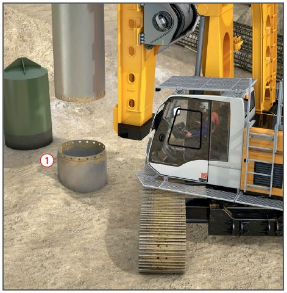

Gefährdungen
- Bei Arbeiten in Bohrungen
können Personen verschüttet
werden oder ersticken.
Allgemeines
- Der Unternehmer hat den
Maschinenführer vor der erstmaligen Verwendung von Bohrgeräten:
- schriftlich zu beauftragen,
- ihn über Gefährdungen und
erforderliche Schutzmaßnahmen
beim Einsatz dieser
Maschinen zu unterweisen,
die Unterweisung ist zu dokumentieren,
- die für den Einsatz dieser
Maschinen erforderlichen Vorschriften,
Regeln und Informationen
(Betriebsanweisung,
Betriebsanleitung des Herstellers)
zur Verfügung zu stellen
und verständlich zu vermitteln.
- Der Unternehmer hat sich vom
Maschinenführer die Befähigung
zum Führen und Warten dieser
Maschinen nachweisen zu
lassen (ein in der Bauwirtschaft
anerkannter freiwilliger Befähigungsnachweis
ist die ZUMBau
Qualifikation).
- Die Unterweisung ist in regelmäßigen
Zeitabständen zu wiederholen.
Schutzmaßnahmen
- Arbeitsplätze und Verkehrswege in Bohrungen müssen ein Mindestlichtmaß von 0,80 m Durchmesser aufweisen.
- Vor Beginn der Arbeiten Befahrungsanweisungen festlegen
und während der Arbeiten überwachen.
- Der Aufsichtführende muss
ständig auf der Baustelle anwesend sein.
- Während der Arbeit in der
Bohrung muss am oberen Bohrlochrand
ständig ein Sicherungsposten anwesend sein, der mit
den Beschäftigten in Kontakt
steht (Sichtverbindung, Sprechverbindung,
Signalleine). Er darf
nicht mit anderen Arbeiten beauftragt
werden und muss jederzeit
Hilfe herbeiholen können.
- Durch kontinuierliche Messungen
ist zu überwachen, dass der
Sauerstoffgehalt in der Atemluft
mindestens 19 Vol.-% beträgt.
- Bei Unregelmäßigkeiten
Bohrung sofort verlassen, z. B. bei:
- steigendem Wasserzufluss,
- Veränderungen im Gestein,
- Auftreten gesundheitsgefährlicher
Gase,
- Antreffen von Versorgungsleitungen,
- Ausfall der Energieversorgung,
- Schäden an elektrischen
Anlagen oder Kabeln,
- Ausfall der Belüftung,
- Ausfall der Wasserhaltung.
- Flüssiggas und Verbrennungsmotoren
nicht in Bohrungen einsetzen.
- Schweiß- und Schneidarbeiten
nur unter Einhaltung der Schutzmaßnahmen,
die für „enge und
feuchte Räume“ gelten, ausführen. Für Elektro- und Autogenschweißarbeiten sind Betriebsanweisungen zu erlassen.
Zusätzliche Hinweise zur Sicherung der Bohrlöcher
- Standsicherheit von Bohrlochwandungen
gewährleisten, z. B.
durch Verrohrung, Injektionen
oder Vereisung.
- Bohr- und Schutzrohre gegen
Abrutschen sichern.
- Bohrlöcher mit dichten, mindestens
20 cm hohen Schutzkragen versehen
 .
.
- Bei Arbeitsunterbrechungen
Bohrlöcher abdecken.
- Bei Ausbrucharbeiten Boden
durch Verrohrung, Verbau oder
ähnliche Maßnahmen gegen
Hereinbrechen sichern. Auch bei
steifem oder halbfestem bindigem
Boden darf die Höhe der
ungesicherten Wand max. 1,0 m
betragen.
Zusätzliche Hinweise für Zugänge zum Arbeitsplatz
- Leitergänge müssen bei Einfahrtiefen über 20 m im Abstand von 5 m mit Ruhebühnen oder Ruhesitzen ausgerüstet sein.
- Bei Einfahrtiefen über 5 m müssen Sicherungen gegen Abstürzen von Personen, z. B. Sicherheitsgeschirr, vorhanden sein.
- Der Einsatz von hochziehbaren
Personenaufnahmemitteln oder
hängenden Arbeitsbühnen ist
der Berufsgenossenschaft vorher
schriftlich anzuzeigen.
Zusätzliche Hinweise für
Lastentransport
- Lastaufnahmemittel in
Bohrungen führen, z. B. durch
Spurlatten, Schienen, gespannte
Seile.
- Lasten gegen Herabfallen
sichern.
Zusätzliche Hinweise für
den Hebezeugebetrieb
- Das Hebezeug muss für den
Personentransport geeignet sein.
- Bei Personentransport darf die
zulässige Fördergeschwindigkeit
0,5 m/s nicht überschreiten.
- Bei Ausfall der Antriebsenergie
muss das Personenaufnahmemittel
in die Ausgangsstellung
zurückgebracht werden können,
gegebenenfalls sollte ein zweites
Tragmittel zur Verfügung stehen.
Zusätzliche Hinweise zur
Belüftung
- Beschäftigte in Bohrungen
mit einwandfreier Atemluft versorgen. Atemschutzgeräte nur in
Not- und Rettungsfällen verwenden.
- Durch kontinuierliche Messungen
ist zu überwachen, dass der
Sauerstoffgehalt der Atemluft
mindestens 19 Vol.-% beträgt
und die zulässige Konzentration
von Gefahrstoffen nicht überschritten
wird.
Zusätzliche Hinweise für Elektrische Anlagen
- Elektrische Betriebsmittel und
Leuchten nur über Schutzkleinspannung,
Schutztrennung oder
FI-Schutzschaltung mit Fehlerstromschutzschalter
≤ 0,03 A
betreiben.
- Ex-Schutz beachten.
- Notstromaggregate müssen
vorhanden sein, falls es durch
Stromausfall zu Gefährdungen
für die Beschäftigten kommen
kann.
- Stromerzeuger und Verteilungen außerhalb der Bohrung
aufstellen.
Zusätzliche Hinweise für Beleuchtung
- Beleuchtung muss mindestens 60 Lux betragen.
- Offenes Licht ist verboten.
- Jeder Beschäftigte muss eine
netzunabhängige Lampe
(Stollenleuchte) mit sich führen.
Zusätzliche Hinweise zur
Rettung
- Rettungskonzept erarbeiten.
- An der Bohrstelle müssen
Rettungsmittel vorhanden sein,
die ein Retten von Beschäftigten
ohne deren Zutun ermöglichen,
z. B. Rettungsgurte oder
Einfahrhosen. Haltegurte sind
nicht zulässig.
Arbeitsmedizinische
Vorsorge
- Arbeitsmedizinische Vorsorge
nach Ergebnis der Gefährdungsbeurteilung
veranlassen (Pflichtvorsorge)
oder anbieten (Angebotsvorsorge).
Hierzu Beratung
durch den Betriebsarzt.
07/2021